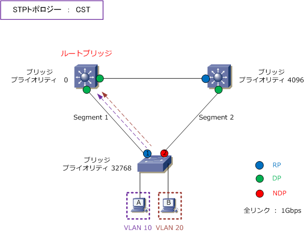
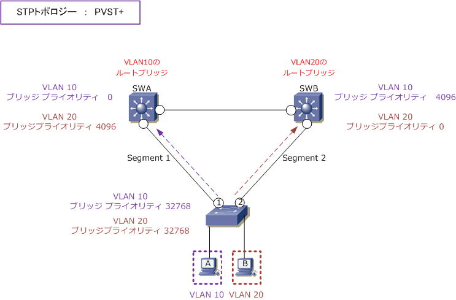
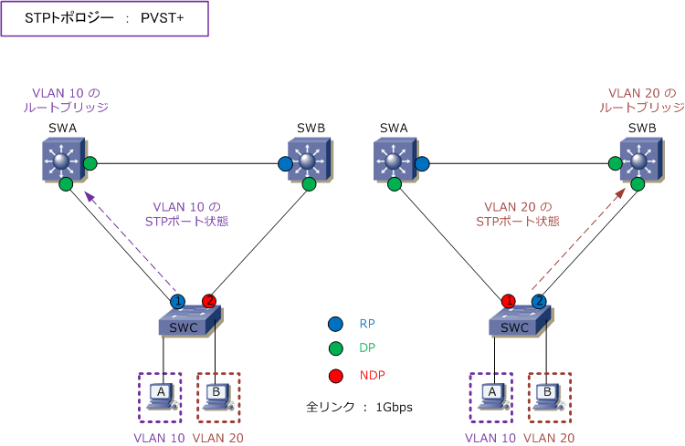
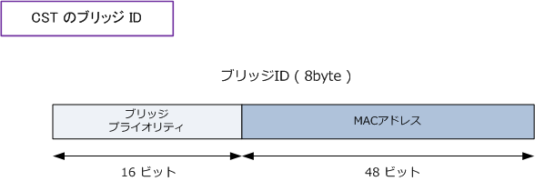
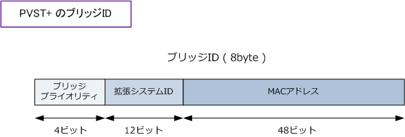

STP - CST / PVST+
スパニングツリーのトポロジー
スパニングツリーのトポロジー（ネットワーク接続形態）には2種類があります。複数のVLANが存在する スイッチドネットワークでも1つのトポロジーを構成するCST（ Common Spanning Tree ）と、複数の VLANが存在する際にVLANごとに個別のトポロジーを構成するPVST+（Per-VLAN Spanning Tree Plus）。
スパニングツリーのトポロジー：CST
CSTではVLAN数に関係なく全体で１つのトポロジーとなるため、VLAN ごとのロードバランシングの通信が できません。下図はCSTによる構成です。VLANごとにスパニングツリーのトポロジーがある訳ではないので 下図通り複数のVLANがあるとしても、VLAN10のホストA、VLAN20のホストBともにPCのトラフィックは フォワーディングポートのセグメント 1 経由で伝送されます。そしてセグメント2のリンクはセグメント1 の リンクの障害発生時に、STPの再計算によりフォワーディングになった時にだけ使用されるリンクとなります。

STPがIEEE802.1Dとし標準化された当時はVLANという概念はなく、当時のスイッチはこのCSTしかサポートしていませんでした。
スパニングツリーのトポロジー：PVST+
PVST+ではVLANごとにSTPトポロジーを構成できるため、VLANごとのロードバランシング通信が可能です。 下図スイッチはPVST+に対応しています。PVST+では1台のスイッチでVLANごとにブリッジプライオリティ を設定できるため、SWAがVLAN10のルートブリッジ、SWBがVLAN20のルートブリッジになる事ができます。

PVST+では、物理ポートはVLANごとにルートポート、指定ポート、非指定ポートが異なるようにできます。 VLAN10は左下図、VLAN20は右下図のSTPポート状態となりVLANごとに流れるトラフィックを分散します。

PVST+ の拡張システムID
CSTでは、ブリッジIDはブリッジプライオリティとMACアドレスにより構成されています。デフォルトでは 全てのVLANにおいてブリッジプライオリティは 32768 がデフォルト値になっています。

PVST+ では、ブリッジIDはブリッジプライオリティ、拡張システムID、MACアドレスによって構成されます。 PVST+ では、VLANごとにSTPのトポロジーを構成することができるため、ブリッジIDにVLAN ID情報を含め ています。そのVLAN IDは拡張システムIDに格納されています。PVST+に、拡張システムIDがあることにより ブリッジプライオリティが4ビットになってしまうので、プライオリティ値は4096の単位でのみ設定できます。

つまり、ブリッジプライオリティと拡張システムIDの合計がプライオリティ値となるため、例えばVLAN1では ブリッジプライオリティ値＝32768、拡張システムID (VLAN ID) = 1 の合計値 32769 がプライオリティ値、 VLAN 10ではブリッジプライオリティ=32768、拡張システムID = 10 の合計値 32778 がプライオリティ値。